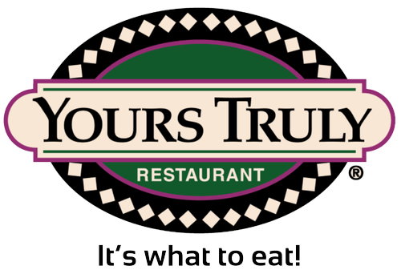
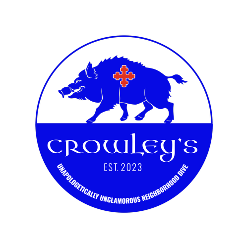

Biga Wood Fired Pizzeria
Biga Wood Fired Pizzeria offers an authentic Naples-style pizza experience right in Kirtland, Ohio. Using traditional methods and the finest, freshest local ingredients, Biga creates delicious pizzas cooked in a wood-fired oven at over 900°F. Their menu features a variety of mouth-watering options, from classic Margherita to unique creations like BBQ Beef Brisket Pizza. In addition to their signature pizzas, Biga also offers a selection of starters, salads, and desserts.
Learn moreKirtland Creamery
Kirtland Creamery is a beloved, family-owned ice cream shop located in Northeast Ohio. Known for serving the best and most delicious ice cream in the area, Kirtland Creamery offers a wide variety of flavors, from classic favorites to unique creations. Visitors can enjoy their treats on a beautiful, covered patio or outside under a picnic table umbrella. The creamery also boasts a new playground, making it a fun and comfortable spot for families.
Learn moreAngelo's Pizzeria
Angelo's Pizzeria in Kirtland, Ohio, is a cherished family-owned restaurant serving the community for over 20 years. Known for its warm, welcoming atmosphere, Angelo's offers a delightful menu featuring classic Italian dishes and American favorites. From delicious, homemade pizzas and calzones to fresh salads, pasta, and sandwiches, there's something for everyone.
Visit Website
Yours Truly Restaurants
Yours Truly Restaurants have been a beloved dining destination in Northeast Ohio since 1981. They offer a welcoming atmosphere and a diverse menu that caters to all tastes, from hearty breakfasts and fresh salads to mouth-watering burgers and classic comfort foods. Known for their friendly service and commitment to quality.
Check out full menuDown The Block
Down The Block is a cozy and welcoming restaurant specializing in delicious food delivery and takeaway services. Their menu features a range of tasty dishes, from hearty comfort foods to healthy salads and sandwiches. Popular choices include a variety of pizzas, calzones, wings, and gourmet salads.
Visit Website
Crowley's Dive Bar
Crowley's Dive Bar is a beloved neighborhood spot known for its relaxed, unpretentious atmosphere and delicious food. Located at 9378 Chillicothe Rd, Crowley's offers a diverse menu featuring hearty burgers, fresh salads, and decadent desserts. The perfect place for a casual meal with friends.
Explore MenuMISSION BBQ
MISSION BBQ is dedicated to serving authentic, mouth-watering all-American barbecue. Founded with a mission to honor and support our nation's heroes, they offer a menu filled with delicious smoked meats, classic sides, and seasonal specialties. Each item is carefully prepared using traditional methods.
Visit WebsiteSausalito Kirtland
Sausalito Kirtland is Kirtland's premier restaurant and caterer, offering a delightful dining experience with a focus on high-quality, locally sourced cuisine. The menu features small plates, soups, salads, pastas, and main dishes, all crafted with care. Guests can also enjoy a curated selection of wines and cocktails.
Learn more